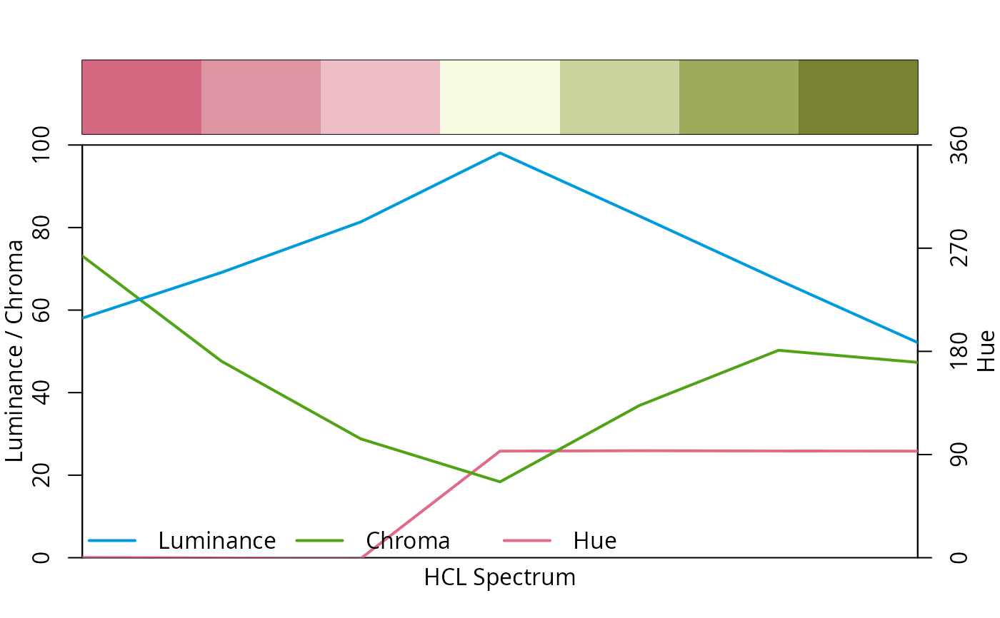

divergingx_hcl.RdDiverging HCL color palettes generated through combination of two fully flexible (and possibly unbalanced) multi-hue sequential palettes.
divergingx_hcl(
n,
palette = "Geyser",
...,
fixup = TRUE,
alpha = 1,
rev = FALSE,
h1,
h2,
h3,
c1,
c2,
c3,
l1,
l2,
l3,
p1,
p2,
p3,
p4,
cmax1,
cmax2
)
divergingx_palettes(palette = NULL, plot = FALSE, n = 7L, ...)the number of colors (\(\ge 1\)) to be in the palette.
character with the name (see details).
arguments passed to hex.
logical. Should the color be corrected to a valid RGB value?
numeric vector of values in the range [0, 1] for alpha
transparency channel (0 means transparent and 1 means opaque).
logical. Should the palette be reversed?
numeric. Starting hue coordinate.
numeric. Center hue coordinate.
numeric. Ending hue coordinate.
numeric. Chroma coordinate corresponding to h1.
numeric. Chroma coordinate corresponding to h2 (if NA, set to 0).
numeric. Chroma coordinate corresponding to h3.
numeric. Luminance coordinate corresponding to h1.
numeric. Luminance coordinate corresponding to h2.
numeric. Luminance coordinate corresponding to h3 (if NA, l1 is used).
numeric. Power parameter for chroma coordinates in first sequential palette.
numeric. Power parameter for luminance coordinates in first sequential palette (if NA, p1 is used).
numeric. Power parameter for chroma coordinates in second sequential palette (if NA, p1 is used).
numeric. Power parameter for luminance coordinates in second sequential palette (if NA, p3 is used).
numeric. Maximum chroma coordinate in first sequential palette (not used if NA).
numeric. Maximum chroma coordinate in second sequential palette (if NA, cmax1 is used).
logical. Should the selected HCL color palettes be visualized?
A character vector with (s)RGB codings of the colors in the palette.
The divergingx_hcl function simply calls sequential_hcl
twice with a prespecified set of hue, chroma, and luminance parameters. This is
similar to diverging_hcl but allows for more flexibility:
diverging_hcl employs two single-hue sequential palettes,
always uses zero chroma for the neutral/central color, and restricts the
chroma/luminance path to be the same in both “arms” of the palette.
In contrast, divergingx_hcl relaxes this to two full multi-hue
palettes that can thus go through a non-gray neutral color (typically light
yellow). Consequently, the chroma/luminance paths can be rather unbalanced
between the two arms.
With this additional flexibility various diverging palettes suggested by https://ColorBrewer2.org/ and CARTO (https://carto.com/carto-colors/), can be emulated along with the Zissou 1 palette from wesanderson, Cividis from viridis, and Roma from scico.
Available CARTO palettes: ArmyRose, Earth, Fall, Geyser, TealRose, Temps, and
Tropic (with Tropic also available in diverging_hcl).
Available ColorBrewer.org palettes: PuOr, RdBu, RdGy, PiYG, PRGn, BrBG, RdYlBu, RdYlGn, Spectral.
Zeileis A, Fisher JC, Hornik K, Ihaka R, McWhite CD, Murrell P, Stauffer R, Wilke CO (2020). “colorspace: A Toolbox for Manipulating and Assessing Colors and Palettes.” Journal of Statistical Software, 96(1), 1--49. doi:10.18637/jss.v096.i01
## show emulated CARTO/ColorBrewer.org palettes
divergingx_palettes(plot = TRUE)
## compared to diverging_hcl() the diverging CARTO palettes are typically warmer
## but also less balanced with respect to chroma/luminance, see e.g.,
specplot(divergingx_hcl(7, "ArmyRose"))
